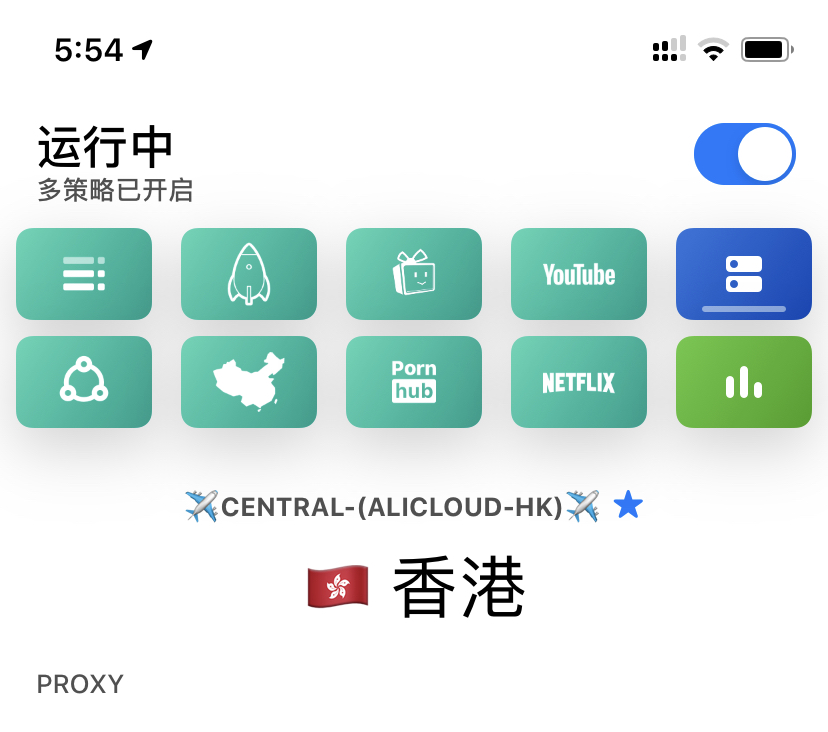

本文隶属于 实用工具/科学上网 分类，点击分类名称可以查看更多相关文章；
主理人推荐
主流的订阅转换生产力工具（API），Tindy佳作，支持多种协议类型（SS/SSR/V2ray），集神机规则 等各种敲好用的策略组于一身，让你的Clash(X/W/A)，Surge/Quantumult(X)/Loon 无需复杂操作即可焕发光彩；
为什么要用本API
| 项目1 | 项目2 | 项目3 | 项目4 |
|---|---|---|---|
| 软件 | 协议支持 | 平台支持 | 开源与否 |
| Shadowrocket | SS/SSR/Vmess/ | iOS | $2.99 |
| Quantumult | SS/SSR/Vmess/ | iOS | $4.99 |
| Quantumult X | SS/SSR/Vmess/ | iOS | $4.99 |
| Surge4 | SS | iOS | $49.99起 |
| v2rayNG | SS/Vmess | Android | 免费 |
| v2rayN | SS/Vmess/Trojan | Windows | 免费 |
| ClashX | SS/Vmess | Mac | 免费 |
| ClashW | SS/Vmess | Windows | 免费 |
| ClashA | SS/Vmess | Android | 免费 |
| Maying | SSR | Android | 免费 |
| Surfboard | SS | Android | 免费 |
| Kitsunebit | SS/Vmess | Android/iOS | 免费/$4.99 |
0.目前主流机场支持
SS协议/SSR协议/Vmess即V2ray协议；（*上面有介绍各个App/软体及其协议支持说明）1.机场一般会提供各式各样的订阅格式链接以方便不同App/软体订阅使用；例如有些机场提供Clash订阅（Clash支持SS/Vmess协议），但总缺少各种较为实用的分流规则/策略组等；那就试试这个subconverter；
2.你可以理解为通过该API（subconverter）将你的全部节点从机场订阅信息中筛选出来，重新梳理，使节点与相关分流规则/策略组进行匹配，排序，分组等；最后，我们将最终转换好的订阅应用在自己熟悉的软体上，例如QuantumultX/Surge/Clash等软体上；
3.如果不想搭建该API，可以直接使用毒奶博客提供的接口（两个步骤即可搞定）；
4.博主部署的API会与 subconverter 开源项目保持同步（在一定时间范围内），保持其分流规则/去广告/等等为最新；（2020.02.06）
subconverter 介绍
在各种订阅格式之间进行转换的实用程序，使得转换后得到的订阅链接支持如clash(R/X/W)/quantumult(X)/surge/surfboard/v2ray/ssr/ss/ssd 等软体，并获得良好的分流规则以及策略组体验；
via 转换后策略组/分流效果截图（ClashX）
*注意：目前Surge暂时支持SS协议，未来会支持vmess协议；（具体以实际为准）
*转换成你想要的软件订阅后会添加额外的特性：
0.去广告，全球广告拦截；
1.默认的一些常用的分流(暂支持特定目标类型：Clash/Surge订阅)；
2.组策略(暂支持特定目标类型：Clash/Surge订阅)；
3.所有节点名称前附带所属国别区域旗帜；(支持目标类型：所有)；
4.额外增加机场专线分流，涵盖TG百分之99以上主流机场，你可设置是否走代理或直连；（暂支持特定目标类型：Clash/Surge订阅）
本API基于的开源项目
本文以及本博主部署的subconverter API（不带UI使用），采用Tindy的开源项目：https://github.com/tindy2013/subconverter，在服务器上部署亦十分简单（如果你也有服务器的话，也可快部署；方法可参考 Github 文档说明。
如需带UI转换订阅，可参考：https://github.com/lzdnico/subweb 或 https://github.com/CareyWang/sub-web 这两个项目自行在服务器部署；
官方群组：https://t.me/subconverter_discuss
本API支持订阅类型
| 项目1 | 项目2 | 项目3 | 项目4 |
|---|---|---|---|
| 类型 | 作为源类型 | 作为目标类型 | 参数 |
| Clash | ✓ | ✓ | clash |
| ClashR | ✓ | ✓ | clashr |
| Quantumult (完整配置) | ✓ | ✓ | quan |
| Quantumult X (完整配置) | ✓ | ✓ | quanx |
| Loon | ✓ | ✓ | loon |
| SS (SIP002) | ✓ | ✓ | ss |
| SS (软件订阅) | ✓ | ✓ | sssub |
| SSD | ✓ | ✓ | ssd |
| SSR | ✓ | ✓ | ssr |
| Surfboard | ✓ | ✓ | surfboard |
| Surge 2 | ✓ | ✓ | surge&ver=2 |
| Surge 3 | ✓ | ✓ | surge&ver=3 |
| Surge 4 | ✓ | ✓ | surge&ver=4 |
| V2Ray | ✓ | ✓ | v2ray |
| 类 TG 代理的 HTTP/Socks 链接 | ✓ | × | 仅支持 &url= 调用 |
*Quantumult (完整配置) 转换后得到的链接，需在设置-配置文件-下载配置文件 处粘贴使用；
*Quantumult(X) (完整配置) 转换后得到的链接，需在配置文件-下载 处粘贴使用；
via 支持类型说明 subconverter GitHub readme.md
本API具体操作步骤
可用性说明
0.如果你没有服务器进行部署该API的话，可使用现成的 https://bnbpro.xyz/（无UI界面）；
1.API部署的服务器经过Cloudflare CDN上，性能稳定且可靠；（按理说除了Cloudflare倒闭，否则应永远不会出现用不了的情况） 点击链接即可查看API订阅转换服务是否可用： https://bnbpro.xyz/ ，如能打开则可用；
简单两步走
1.你只需将你的机场订阅链接进行encode；
2.再套用相应目标类型的格式即可；
3.两步搞定；
第一步 对订阅链接进行Encode
以下用法中，以转换目标类型为Clash进行举例:
https://bnbpro.xyz/sub?target=clash&url=URL_ENCODED_LINKS0.上述链接中的clash为转换目标类型，表示你要在clash使用该订阅；
1.上述链接中的URL_ENCODED_LINKS：需将之替换为经过ENCODE(编码)后的链接；
2.填完，即可复制到相应软体中进行订阅使用；
如何Encode
0.复制机场提供的订阅链接（符合上述目标支持类型即可）；
1.打开 https://www.urlencoder.org/；
2.粘贴订阅链接
3.点击ENCODE
4.得到URL_ENCODED_LINKS
第二步 套用目标类型进行订阅转换
使用API转换原机场订阅为你需要的软体订阅格式（例如clash/Quantumult/QuantumultX/Surge3/4等）；
https://bnbpro.xyz/sub?target=clash&url=URL_ENCODED_LINKS #转换为clash订阅
https://bnbpro.xyz/sub?target=clashr&url=URL_ENCODED_LINKS #转换为clashr订阅
https://bnbpro.xyz/sub?target=quan&url=URL_ENCODED_LINKS #转换为Quantumult订阅
https://bnbpro.xyz/sub?target=quanx&url=URL_ENCODED_LINKS #转换为QuantumultX订阅
https://bnbpro.xyz/sub?target=surge&ver=4&url=URL_ENCODED_LINKS #转换为surge4订阅
https://bnbpro.xyz/sub?target=surfboard&url=URL_ENCODED_LINKS #转换为surfboard订阅
https://bnbpro.xyz/sub?target=v2ray&url=URL_ENCODED_LINKS #转换为v2ray订阅*Quantumult (完整配置) 转换后得到的链接，需在设置-配置文件-下载配置文件 处粘贴使用；
*Quantumult(X) (完整配置) 转换后得到的链接，需在配置文件-下载 处粘贴使用；
1.先搞清楚你转换后给哪个App/应用用的（Clash/surge/v2ray/Quantumult(X)`..）；
2.然后套用进去即可；
本API高阶参数使用方法
进阶链接
调用地址 (进阶)
https://bnbpro.xyz/sub?target=%TARGET%&url=%URL%&emoji=%EMOJI%····调用说明 (进阶)
| 调用参数 | 必要性 | 示例 | 解释 |
|---|---|---|---|
| target | 必要 | surge&ver=4 | 指想要生成的配置类型，详见上方 支持类型 中的参数 |
| url | 可选 | https%3A%2F%2Fwww.xxx.com | 指机场所提供的订阅链接，需要经过 URLEncode 处理，可选的前提是在 default_url 中进行指定。也可以使用 data URI |
| config | 可选 | https%3A%2F%2Fwww.xxx.com | 指远程 pref.ini (包含分组和规则部分)，需要经过 URLEncode 处理，可查看 示例仓库 寻找灵感，默认加载本地设置文件 |
| upload | 可选 | true / false | 用于将生成的订阅文件上传至 Gist，需要填写gistconf.ini，默认为 false (即不上传) |
| upload_path | 可选 | MySS.yaml | 用于将生成的订阅文件上传至 Gist 后的名称，需要经过 URLEncode 处理 |
| emoji | 可选 | true / false | 用于在节点名称前加入 Emoji，默认为 true |
| group | 可选 | MySS | 用于设置该订阅的组名，多用于 SSD/SSR |
| tfo | 可选 | true / false | 用于开启该订阅链接的 TCP Fast Open，默认为 false |
| udp | 可选 | true / false | 用于开启该订阅链接的 UDP，默认为 false |
| scv | 可选 | true / false | 用于关闭 TLS 节点的证书检查，默认为 false |
| list | 可选 | true / false | 用于输出 Surge Node List 或者 Clash Proxy Provider 或者 Quantumult (X) 的节点订阅 或者 解码后的 SIP002 |
| sort | 可选 | true / false | 用于对输出的节点或策略组进行再次排序，默认为 false |
| include | 可选 | 详见下文中 include_remarks | 指仅保留匹配到的节点，支持正则匹配，需要经过 URLEncode 处理，会覆盖配置文件里的设置 |
| exclude | 可选 | 详见下文中 exclude_remarks | 指排除匹配到的节点，支持正则匹配，需要经过 URLEncode 处理，会覆盖配置文件里的设置 |
| filename | 可选 | MySS | 指定该链接生成的配置文件的文件名，可以在 Clash For Windows 等支持文件名的软件中显示出来 |
| append_type | 可选 | true / false | 用于在节点名称前插入节点类型，如 [SS],[SSR] 等 |
| append_info | 可选 | true / false | 用于输出包含流量或到期信息的节点, 默认为 true，设置为 false 则取消输出 |
| expand | 可选 | true / false | 用于在 API 端处理或转换 Surge, QuantumultX 的规则列表，即不将规则全文置入配置文件中，默认为 false，设置为 true 则将规则全文写进配置文件 |
| dev_id | 可选 | 92DSAFA | 用于设置 QuantumultX 的远程设备 ID, 以在某些版本上开启远程脚本 |
| interval | 可选 | 43200 | 用于设置托管配置更新间隔，确定配置将更新多长时间，单位为秒 |
| strict | 可选 | true / false | 如果设置为 true，则 Surge 将在上述间隔后要求强制更新 |
举个例子：
有订阅 https://xxx.cloud/subscribe/ABCDE?clash=vmess，想转换成 Surge 4 的订阅，且需要开启 TFO 和 UDP
顺便再给节点名加上 EMOJI 同时排除掉订阅中显示流量和官网的节点（节点名为"剩余流量：1024G"，"官网地址：dler.cloud"）
首先确认需要用到的参数：
target=surge&ver=4 、 tfo=true 、 udp=true 、 emoji=true 、exclude=(流量|官网)
url=https://xxx.cloud/subscribe/ABCDE?clash=vmess
然后将需要 URLEncode 的部分进行处理：
exclude=%28%E6%B5%81%E9%87%8F%7C%E5%AE%98%E7%BD%91%29
url=https%3A%2F%2Fxxx.cloud%2Fsubscribe%2FABCDE%3Fclash%3Dvmess
接着将所有元素进行拼接：https://bnbpro.xyz/sub?target=surge&ver=4&tfo=true&udp=true&emoji=true&exclude=%28%E6%B5%81%E9%87%8F%7C%E5%AE%98%E7%BD%91%29&url=https%3A%2F%2Fdler.cloud%2Fsubscribe%2FABCDE%3Fclash%3Dvmess
最后将该链接填写至 Surge 的订阅处就大功告成了。
参考subconverter：https://github.com/tindy2013/subconverter/blob/master/README-cn.md
注意事项
QuantumultX 用户务必注意
默认不加其他参数转换后得到的链接，如https://bnbpro.xyz/sub?target=quanx&url=URL_ENCODED_LINKS，需要在QuantumultX-配置文件-下载处使用，博主暂时不建议使用该方法，因为这将完全替代你之前的配置文件。
建议添加参数&list=true：
1.QuantumultX-节点-订阅-添加：https://bnbpro.xyz/sub?target=quanx&url=URL_ENCODED_LINKS&list=true
2.如想进阶使用策略组/自定图标/自定义分流可参考：
节点名称前加国旗图标
如果只是想给节点名称前加国旗图标，可在链接后添加字段：&list=true，例如https://bnbpro.xyz/sub?target=clash&url=URL_ENCODED_LINKS&list=true
大家可以试一下；
旧接口
https://bnbpro.xyz/clash?url=URL_ENCODED_LINKS多个节点订阅转换
如果你有多个订阅, 在url encode之前使用 '|' 来分隔链接。
e.g.
我有以下两个订阅:
https://abb.cloud/subscribe/ABCDE?clash=vmesshttps://acc.cloud/subscribe/ABCDE?clash=vmess
使用'|'分隔:https://abb/subscribe/ABCDE?clash=vmess|https://acc.cloud/subscribe/ABCDE?clash=vmess
url encode后:https%3A//abb.cloud/subscribe/ABCDE%3Fclash%3Dvmess%7Chttps%3A//acc.cloud/subscribe/ABCDE%3Fclash%3Dvmess
添加到链接后面:（以目标类型为：clash进行举例）https://bnbpro.xyz/sub?target=clash&url=https%3A//abb.cloud/subscribe/ABCDE%3Fclash%3Dvmess%7Chttps%3A//acc.cloud/subscribe/ABCDE%3Fclash%3Dvmess
🍖 食用 🍖
更多进阶用法可参考高阶用法；
QuantumultX 预配置文件
毒奶专属预配置文件 屏蔽广告效果良好；

项目位置：https://github.com/limbopro/Profiles/tree/master/limbopro/Gift （包含部分神机分流规则&野比去广告分流规则，Tiktok解锁配置）
本预配置文件，相当于提前为QuantumultX预设策略（8个策略）及其策略图标，去广告规则，主流站点分流规则（已包含部分神机规则&野比去广告规则），以及无需拔卡看，Tiktok，解锁VSCO会员；务必遵循教程步骤前后顺序，以确保其可用性；
使用步骤：
使用预配置文件前可先备份你的机场订阅链接：
针对有多个机场订阅链接的小伙伴，这会是一个快捷备份方法
1.进入QuantumultX，点击右下角三菱按钮；
2.找到配置文件模块下编辑，点击；
3.找到[server-remote]，下方就是你已经配置好的机场订阅链接；
4.复制，粘贴到某处，留作备用（不然等下又要一个个添加（如果持有机场多的话））；
5.如果你只订阅了一个机场，进入QuantumultX，点击右下角三菱按钮，找到节点模块，引用（订阅）处复制；
6.备份好机场节点订阅链接后，下载预配置文件即可使用；
1.复制https://raw.githubusercontent.com/limbopro/Profiles/master/limbopro/Gift/Without/QuantumultX4limbopro.conf预配置文件链接；
2.进入QuantumultX，点击右下角三菱按钮；
3.找到配置文件模块下的下载，点击；
4.粘贴刚刚复制的配置链接，点击右上角确定按钮；
5.保存完毕，回到QuantumultX主界面，就可以看到配置好的8个策略图标了；
6.最后按照备份机场订阅链接的步骤粘贴之前备份的机场订阅；
最终效果如下
附注
版权属于：毒奶
联系我们： https://limbopro.xyz/6.html
电报频道： https://t.me/limboprossr
推特账号： https://twitter.com/limboprossr
集美账号： https://www.instagram.com/limboprossr/
油管账号 ： http://bit.ly/2VJcz7o/
机场推荐： https://limbopro.xyz/865.html
上网必会： https://limbopro.xyz/archives/2910.html
广告屏蔽： https://limbopro.xyz/archives/adguard.html
实用工具： https://limbopro.xyz/category/tools/
网站优化： https://limbopro.xyz/category/Typecho/
美图欣赏： https://limbopro.xyz/category/instagram/
开车专栏： https://limbopro.xyz/category/NSFW/
返回源站： https://limbopro.github.io（每日0点更新）本文链接：https://limbopro.xyz/archives/subconverter.html
本文采用 CC BY-NC-SA 4.0 许可协议 ，转载和引用时请注意遵守协议！